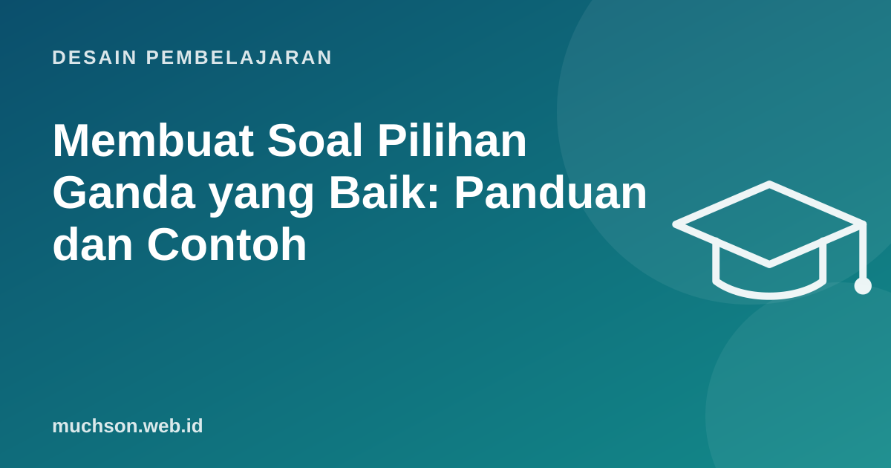

Beranda › Artikel › Desain Pembelajaran
Desain PembelajaranMembuat Soal Pilihan Ganda yang Baik: Panduan dan Contoh
Soal pilihan ganda sering dianggap hanya bisa menguji hafalan. Padahal soal yang dirancang dengan baik bisa menguji penerapan, analisis, bahkan evaluasi. Masalahnya ada pada cara menulis: soal yang buruk bisa ditebak tanpa memahami materi, atau justru menjebak peserta yang sebenarnya paham.

Anatomi soal
STEM (pokok soal):
Sebuah toko memiliki 200 pelanggan aktif di awal bulan. Selama bulan itu,
10 pelanggan berhenti dan 30 pelanggan baru bergabung.
Berapa churn rate bulan itu?
PILIHAN:
a) 5% ← kunci
b) 4,5% ← pengecoh: membagi dengan 220 (memasukkan pelanggan baru)
c) 10% ← pengecoh: salah memakai 20 sebagai pembagi
d) 15% ← pengecoh: menjumlah 10 + 30 lalu dibagi lainSetiap pengecoh di contoh ini berasal dari kesalahan yang memang sering dilakukan, sehingga pilihan peserta memberi informasi diagnostik.
Aturan menulis stem
- Stem harus bisa dijawab tanpa melihat pilihan. Bila tidak, stem terlalu kabur.
- Satu masalah per soal.
- Hindari kalimat negatif. Bila terpaksa, tebalkan: "manakah yang BUKAN...".
- Masukkan kata yang berulang di setiap pilihan ke dalam stem.
- Gunakan skenario untuk menguji penerapan.
Aturan menulis pilihan
Penelitian Rodriguez (2005) menunjukkan tiga pilihan (satu kunci dan dua pengecoh yang baik) sering sama efektifnya dengan empat atau lima pilihan, dan lebih cepat ditulis serta dikerjakan. Dua pengecoh yang masuk akal lebih baik daripada empat yang asal-asalan.
Menguji tingkat berpikir lebih tinggi
| Tingkat | Pola stem | Contoh |
|---|---|---|
| Mengingat | "Apa kepanjangan..." | Apa kepanjangan NPS? |
| Menerapkan | "Diberikan data..., berapa..." | Hitung NPS dari 50 promotor, 30 pasif, 20 detraktor. |
| Menganalisis | "Apa penyebab paling mungkin..." | Query ini lambat pada 1 juta baris. Penyebab paling mungkin? |
| Mengevaluasi | "Tindakan terbaik adalah..." | Pelanggan memberi skor 3 dan kontraknya habis bulan depan. Langkah pertama terbaik? |
Analisis butir sederhana setelah ujian
Soal dengan daya beda negatif (kelompok bawah lebih banyak benar daripada kelompok atas) hampir selalu bermasalah: kunci salah, stem ambigu, atau pengecoh yang ternyata juga benar.
Tanya jawab
Berapa pilihan jawaban yang ideal?
Bolehkah AI membuat soal pilihan ganda?
Apakah soal pilihan ganda cukup untuk ujian akhir?
Sumber dan bacaan lanjut
- Haladyna, Downing, Rodriguez (2002): A Review of Multiple-Choice Item-Writing Guidelines
- Rodriguez (2005): Three Options Are Optimal for Multiple-Choice Items
- Vanderbilt Center for Teaching: Writing Good Multiple Choice Test Questions